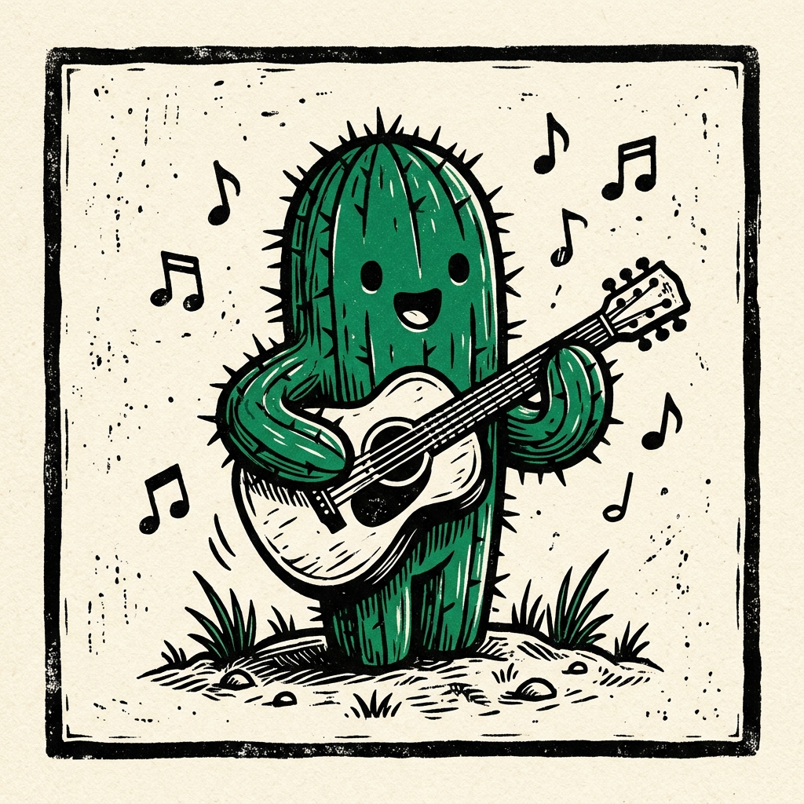
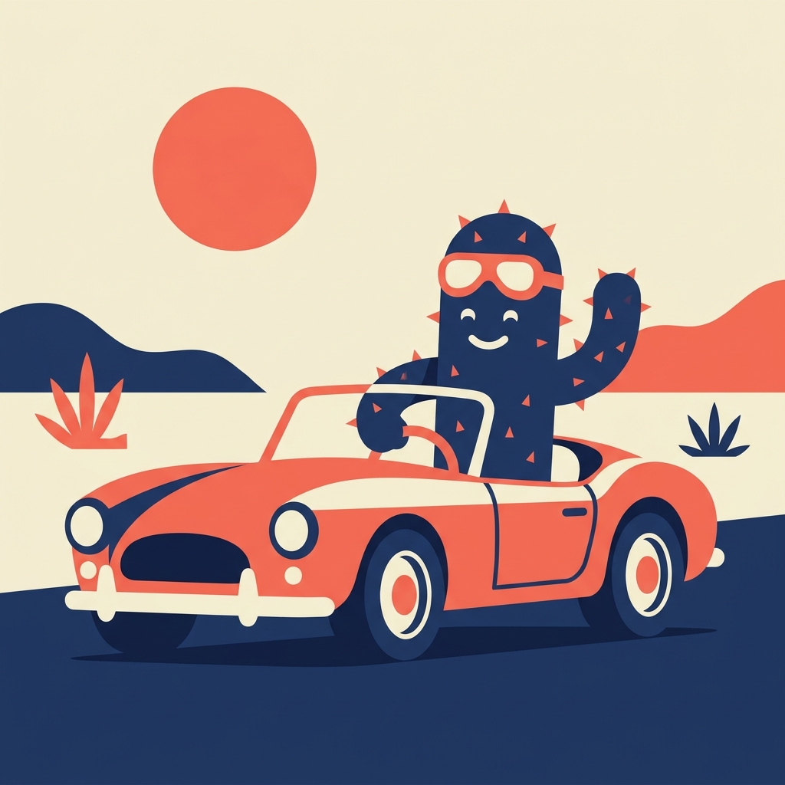
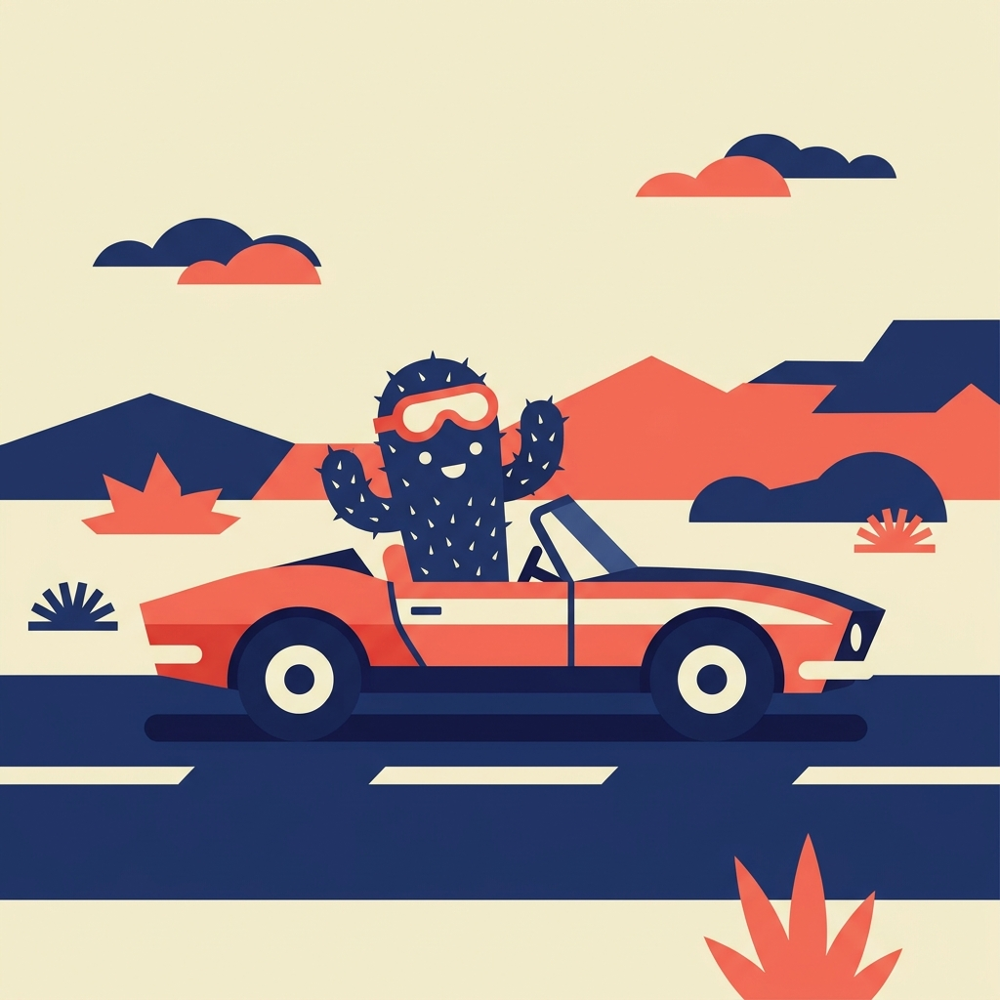
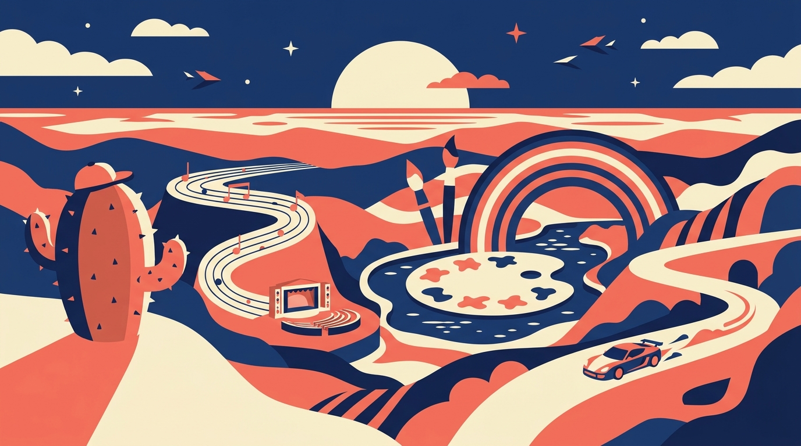
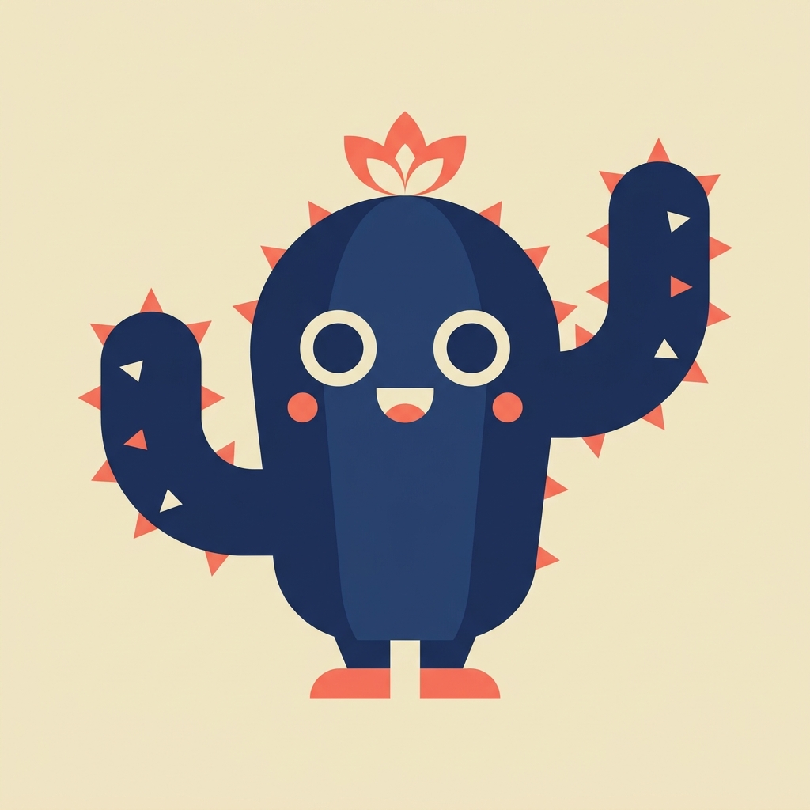

1. Alan
Müzik
Farklı enstrümanların ahengini hissetmek, yeni melodiler keşfetmek ve müziğin enerjisiyle dinlenmek benim için vazgeçilmez bir tutkudur.


Hayatımın merkezinde yer alan müzik ve spor, bana hem yüksek bir enerji hem de zihinsel bir zindelik kazandırıyor. Her işimde dakik ve üretken olmayı ilke edinerek zamanı en verimli şekilde değerlendirmeye odaklanıyorum. Meraklı yapım sayesinde yeni şeyler öğrenmekten ve kendimi sürekli geliştirmekten büyük bir keyif alıyorum.
Günlük yaşamıma ilham veren, zihnimi tazeleyen ve beni motive eden temel uğraşlarım.

Farklı enstrümanların ahengini hissetmek, yeni melodiler keşfetmek ve müziğin enerjisiyle dinlenmek benim için vazgeçilmez bir tutkudur.

Hareket halinde olmak, fiziksel dayanıklılığı artırmak ve zinde kalmak hem zihinsel odaklanmamı hem de yaşam kalitemi yüksek tutar.

Farklı mutfak kültürlerini tanımak, özgün lezzetler keşfetmek ve sofraları keyifli sohbetlerle paylaşmak en büyük zevklerimdendir.